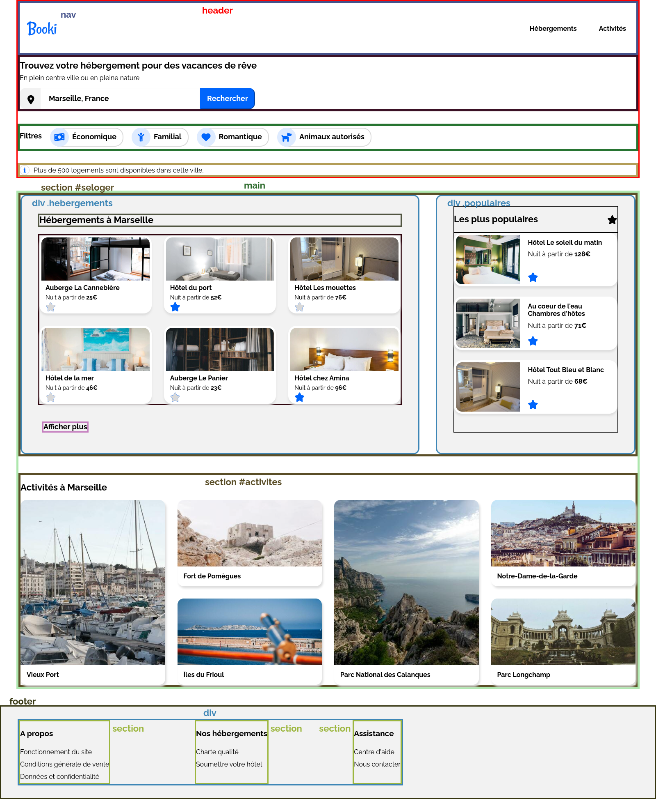

Développeur d'applications Javascript-React
Projet 2 - Etape 1 : découpage du site.
Les principales balises HTML5
Une analyse rapide des maquettes desktop et smartphone du site montre un découpage évident, qui n'est pas incompatible d'une version à l'autre.
- Une partie entête qui sera le header incluant une barre de navigation nav , puis la partie recherche, les filtres et la ligne d'information qui seront tous les trois des div identifiés respectivement #recherche, #filtres et #info . J'ai choisi d'inclure la barre de navigation dans l'entête, mais on aurait très bien pu a priori la détacher.
- Une partie centrale qui sera le main dont le contenu englobe la partie hébergements/populaires qui sera la section #seloger et la partie activités qui sera la section #activites.
- Un pied de page qui sera le footer englobant les trois sections "A propos", "Nos hébergements" et "Assistance",
Dans la section section #seloger apparaît alors les deux divisions :
- div #hebergements
- div #populaires
Conformément à la spécification ces deux sections doivent appraître dans la version desktop avec des largeurs respectivement dans les rapports 2/3 et 1/3. On pourrait réaliser cette contrainte en imposant à ces sections les propriétés width: 66.7% et width: 33.3%. Dans un premier temps je pensais réaliser cette contrainte en définissant le conteneur section #seloger comme flexbox (par défaut en ligne) avec un flex-grow: 2 pour la première division et un flex-grow: 1 pour la seconde division comme on ferait pour les grids, avant de me rendre compte qu'évidemment ceci ne fonctionne pas car cela ne contraint pas les largeurs initiales et ne fait que répartir l'espace restant sur une ligne à chacun des conteneurs dans le rapport 2/3 et 1/3.
Premières observations.
Il est très important de faire apparaître un titre h1, car c'est lui que les moteurs de recherche essayent en premier lieu de repérer pour identifier le thème de la page. La hiérarchie des titres apparaît alors comme la suivante :
- h1 : "Trouver votre hébergement pour des vacances de rêve".
- h2 : "Hébergements à Marseille", "Les plus populaires", "Activités à Marseille".
- h3 : dans le footer : "A propos", "Nos hébergements", "Assistance".
Les tailles de fontes pour h1 et h2 sont les mêmes.
Le découpage du site

Passage de la version desktop à la version smartphone
La structure HTML précédente est valide quand on passe d'une version à l'autre, mais attention : dans la section section #seloger les divisions #hebergements et #populaires sont inversées en version smartphone et disposées non plus en ligne mais en colonne. On obtiendra ce résultat en ajoutant à la flexbox #seloger la propriété : flex-flow: column-reverse.
On observe aussi que :
- La division #populaires garde son fond gris mais perd ses border-radius, alors que la division #hebergements perd son fond gris et donc les border-radius devenus inutiles.
- Le footer n'a pas de marge. On évitera donc de mettre une marge dans le corps body du document. Mais on appliquera plutôt des paddings identiques sur le header et le main en version desktop.
- L'alignement des trois divisions du footer change d'orientation et ces divisions n'occupent pas toute la largeur disponible en mode desktop. On les intégrera donc dans un div rendu flexbox avec une largeur fixe choisie à 940px et qui prendra la propriété flex-direction: column en version smartphone.
- Dans le header, la barre de navigation occupe toute la largeur alors que les 3 éléments "recherche", "titre", "info" sont décalés. On regroupera donc ces 3 éléments.
En version tablette, puisque la spécification n'impose rien de particulier, j'ai choisi de garder la présentation desktop en passant simplement en colonne la section #seloger en inversant l'ordre sans changer l'apparence.
Nous pouvons d'ors et déjà commencer à ce stade à traduire tout ce qui a été vu précédement en code et observer le comportement du site.